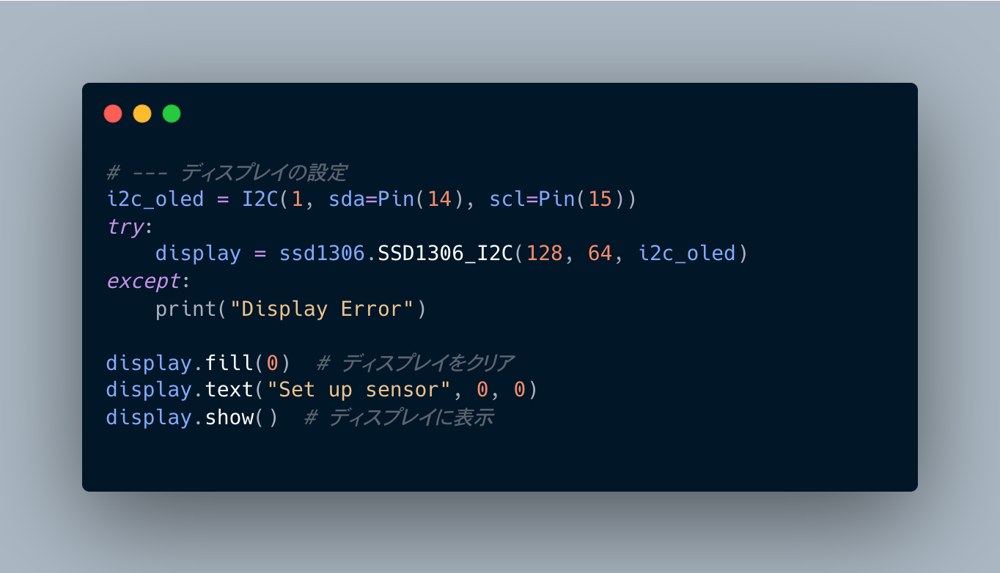
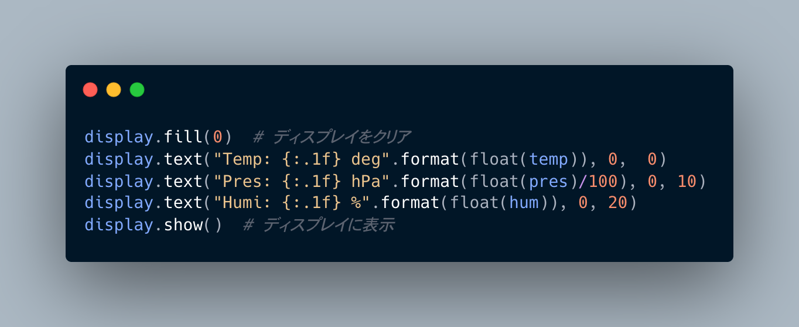
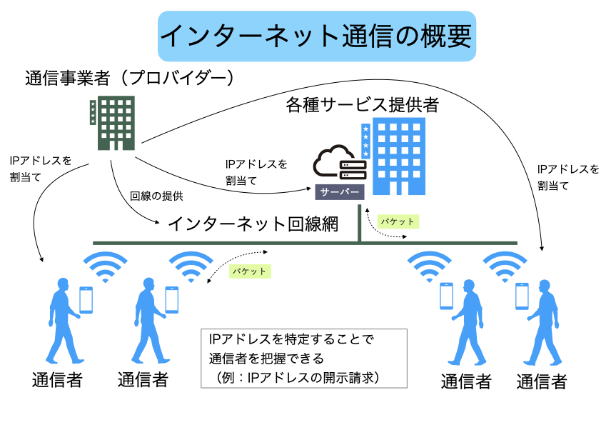

講義ノート2回目
大きな目標設定
- IoTの基礎をマイコンプログラミングを通して学ぶ
- Pythonの文法を知る
- インターネット通信の仕組みを知る
実験内容
- 温度センサーをRaspberryPi Pico で読み取る
- センサー値をOLEDディスプレイで表示する
- 計測データをWiFiでPCへ送信し，PCで受信する
1. センサー値をOLEDディスプレイで表示する
配線図

完成図

OLED表示付きプログラム
プログラムの雛形
from machine import Pin, PWM, reset, time_pulse_us, I2C
import ssd1306
import time
import bme280_float as bme280
i2c_bme = I2C(0, scl=Pin(17), sda=Pin(16), freq=100000)
print(i2c_bme.scan()) # [118] または [119] なら正常
bme = bme280.BME280(i2c=i2c_bme)
led = Pin(22, Pin.OUT) # LEDについてはなくても問題ない
led.value(1) #
#=====<ここにディスプレイの初期設定を書く>=====
#=====<ここまで>=====
# --- 計測開始
while True:
# 気温，気圧，湿度を読み取る
temp, pres, hum = bme.read_compensated_data()
print('気温: {:.2f}°C 気圧: {:.2f}hPa 湿度: {:.2f}%'.format(temp, pres / 100, hum))
# (オプション）気温が25度を超えたらLEDを点灯させる
if temp > 25.0:
led.value(0)
else:
led.value(1)
#=====<ここにディスプレイ表示処理を書く>=====
#=====<ここまで>=====
# 1秒間隔で計測を続ける
time.sleep(1)
ディスプレイの初期設定 
ディスプレイの表示処理 
課題
設定温度よりも気温が高かったら，Hot!!，そうでなければComfortableと表示する処理を追加しよう．
2. インターネット通信の仕組み
2.1 一般的な説明

2.2 実験環境のネットワーク設定
3. リモート計測プログラム
3.1 PicoからWiFi通信をするプログラム
SSID/PASSWORDを，使用しているネットワーク設定に書き換えるPICO_IDを1,2,3のどれかに変える（他のPicoと重複しないこと）- プログラムを，Picoに
main.pyというファイル名で保存する
"""
# Pico 温度・気圧・湿度計測データ送信プログラム
## 1. 概要
このプログラムは，Raspberry Pi Pico (以下，Pico) 上で動作する，
温度・気圧・湿度センサーによる計測と，その計測データをネットワーク接続したクライアントPCへ送信
するプログラムです．
計測データは，Picoに接続したOLEDディスプレイにも表示されます．
基本的には，USB電源によるスタンドアローン (PCなどには接続せず，単独で動作させる)な使い方を想定して
います．
## 2. 接続しているデバイス
- 温度・気圧・湿度センサー: BME280 (5V仕様) 1台
- OLEDディスプレイ: SSD1306 1台
- LED: 砲弾型LED 1個
## 3. 動作フロー
1) main()関数より，`start_server()` を呼び出し（実質的なメイン関数）
2) WiFi接続を確立（失敗したら停止）
3) BME280接続を確立（失敗したら停止）
4) サーバーを起動し，リクエストを待機
5) `handle_client()`にて，リクエストに対応
5-1) "led_on": led.on()
5-2) "led_off": led.off()
5-3) "get_status": response
5-4) "ping": response
5-5) "get_sensor_data":
bmeが初期化できている場合: response {temp, pres, hum}
それ以外: response error
5-6) それ以外: response
## 4. 設定項目
SSID = ユーザーにより設定
PASSWORD = ユーザーにより設定
SERVER_PORT = ユーザーにより設定 (デフォルト: 8080)
PICO_ID = XX (各Picoで1，2，3に変更)
## 5. ライブラリ
- bme280_float.py
- ssd1306
## 6. 使用方法
`main.py`として起動する (Picoに書き込まれている場合，電源を入れれば自動でスタートする)
PCで，`multi_client.py`を起動し，リクエストを送信することでデータ収集ができるようになる．
"""
import network
import socket
import time
import machine
import json
import bme280_float as bme280
# WiFi設定
SSID = "Buffalo-9EC0"
PASSWORD = "66x6h6hjjtvbk"
# サーバー設定
SERVER_PORT = 8080
# Pico固有ID設定（各Picoで1，2，3に変更）
PICO_ID = XX
# LED設定
led = machine.Pin("LED", machine.Pin.OUT)
# BME280設定（I2C）
bme = None
def init_bme280():
"""BME280センサーの初期化"""
global bme
try:
# I2C設定
i2c_bme = machine.I2C(0, scl=machine.Pin(17), sda=machine.Pin(16), freq=100000)
devices = i2c_bme.scan()
print(f"I2Cデバイス検出: {devices}") # [118] または [119] なら正常
if not devices:
print("I2Cデバイスが見つかりません")
return False
# BME280の初期化
bme = bme280.BME280(i2c=i2c_bme)
print("BME280センサーが正常に初期化されました")
return True
except Exception as e:
print(f"BME280初期化エラー: {e}")
return False
def connect_wifi():
"""WiFiに接続"""
wlan = network.WLAN(network.STA_IF)
wlan.active(True)
if not wlan.isconnected():
print("WiFiに接続中...")
wlan.connect(SSID, PASSWORD)
timeout = 10
while not wlan.isconnected() and timeout > 0:
time.sleep(1)
timeout -= 1
print(".", end="")
if wlan.isconnected():
print(f"\nWiFi接続成功: {wlan.ifconfig()}")
return wlan.ifconfig()[0] # IPアドレスを返す
else:
print("WiFi接続に失敗しました")
return None
else:
print(f"既にWiFiに接続済み: {wlan.ifconfig()}")
return wlan.ifconfig()[0]
def handle_client(client_socket):
"""クライアントからのリクエストを処理"""
try:
# データ受信（最大1024バイト）
data = client_socket.recv(1024)
if data:
message = data.decode('utf-8')
print(f"受信メッセージ: {message}")
# JSONデータの解析
try:
request = json.loads(message)
command = request.get("command")
# コマンドに応じた処理
if command == "led_on":
led.on()
response = {"status": "success", "message": "LED点灯", "led_state": "on", "pico_id": PICO_ID}
elif command == "led_off":
led.off()
response = {"status": "success", "message": "LED消灯", "led_state": "off", "pico_id": PICO_ID}
elif command == "get_status":
response = {"status": "success", "message": "Pico W is running", "uptime": time.ticks_ms(), "pico_id": PICO_ID}
elif command == "ping":
response = {"status": "success", "message": "pong", "pico_id": PICO_ID}
elif command == "get_sensor_data":
if bme:
try:
# 参考プログラムと同じ方法でデータを取得
temp, pres, hum = bme.read_compensated_data()
sensor_data = {
"temperature": round(float(temp), 2),
"pressure": round(float(pres) / 100, 2), # Paから hPaに変換
"humidity": round(float(hum), 2),
"timestamp": time.ticks_ms()
}
response = {"status": "success", "data": sensor_data, "pico_id": PICO_ID}
except Exception as e:
response = {"status": "error", "message": f"センサー読み取りエラー: {e}", "pico_id": PICO_ID}
else:
response = {"status": "error", "message": "BME280が初期化されていません", "pico_id": PICO_ID}
else:
response = {"status": "error", "message": "未知のコマンド", "pico_id": PICO_ID}
except:
# プレーンテキストメッセージの場合
if message.strip() == "hello":
response = {"status": "success", "message": "Hello from Pico W!", "pico_id": PICO_ID}
else:
response = {"status": "success", "message": f"受信: {message}", "pico_id": PICO_ID}
# レスポンス送信
response_json = json.dumps(response)
client_socket.send(response_json.encode('utf-8'))
except Exception as e:
print(f"エラー: {e}")
error_response = {"status": "error", "message": str(e)}
client_socket.send(json.dumps(error_response).encode('utf-8'))
finally:
client_socket.close()
def start_server():
"""サーバーを開始"""
# WiFi接続
ip_address = connect_wifi()
if not ip_address:
return
# BME280初期化
init_bme280()
# ソケット作成
server_socket = socket.socket(socket.AF_INET, socket.SOCK_STREAM)
server_socket.setsockopt(socket.SOL_SOCKET, socket.SO_REUSEADDR, 1)
try:
# サーバーをバインド
server_socket.bind((ip_address, SERVER_PORT))
server_socket.listen(5)
print(f"サーバー開始: {ip_address}:{SERVER_PORT}")
print("クライアントからの接続を待機中...")
while True:
try:
# クライアント接続を受け付け
client_socket, client_address = server_socket.accept()
print(f"クライアント接続: {client_address}")
# クライアントリクエストを処理
handle_client(client_socket)
except KeyboardInterrupt:
print("\nサーバーを停止します")
break
except Exception as e:
print(f"接続エラー: {e}")
continue
finally:
server_socket.close()
# メイン実行
if __name__ == "__main__":
start_server()
3.2 モニタープログラム(PC)
以下のプログラムはThonnyのローカルPythonで実行する．
import socket
import json
import time
import threading
import csv
import os
from datetime import datetime
class MultiPicoClient:
def __init__(self, pico_configs):
"""
複数のPico W用クライアント
Args:
pico_configs (list): Pico設定のリスト
例: [{"id": 1, "ip": "192.168.1.100", "port": 8080}, ...]
"""
self.pico_configs = pico_configs
self.timeout = 5
self.monitoring = False
self.monitor_thread = None
self.csv_logging = False
self.csv_filename = None
self.csv_file = None
self.csv_writer = None
def send_command_to_pico(self, pico_config, command, data=None):
"""
指定されたPico Wにコマンドを送信
Args:
pico_config (dict): Pico設定
command (str): 送信するコマンド
data (dict): 追加データ（オプション）
Returns:
dict: Pico Wからのレスポンス
"""
try:
client_socket = socket.socket(socket.AF_INET, socket.SOCK_STREAM)
client_socket.settimeout(self.timeout)
client_socket.connect((pico_config["ip"], pico_config["port"]))
if data:
message = {"command": command, **data}
else:
message = {"command": command}
json_message = json.dumps(message)
client_socket.send(json_message.encode('utf-8'))
response = client_socket.recv(1024).decode('utf-8')
try:
response_data = json.loads(response)
return response_data
except json.JSONDecodeError:
return {"status": "error", "message": "Invalid JSON response", "raw_response": response}
except socket.timeout:
return {"status": "error", "message": "接続タイムアウト", "pico_id": pico_config.get("id")}
except ConnectionRefusedError:
return {"status": "error", "message": "接続が拒否されました", "pico_id": pico_config.get("id")}
except Exception as e:
return {"status": "error", "message": f"エラー: {str(e)}", "pico_id": pico_config.get("id")}
finally:
try:
client_socket.close()
except:
pass
def ping_all(self):
"""全てのPico Wにpingを送信"""
results = {}
for pico in self.pico_configs:
print(f"Pico {pico['id']} ({pico['ip']}) にping送信中...")
response = self.send_command_to_pico(pico, "ping")
results[pico['id']] = response
if response.get("status") == "success":
print(f" ✓ Pico {pico['id']}: {response.get('message')}")
else:
print(f" ✗ Pico {pico['id']}: {response.get('message')}")
return results
def get_all_sensor_data(self):
"""全てのPico Wからセンサーデータを取得"""
results = {}
for pico in self.pico_configs:
response = self.send_command_to_pico(pico, "get_sensor_data")
results[pico['id']] = response
return results
def setup_csv_logging(self, filename=None):
"""CSV保存の設定"""
if filename is None:
timestamp = datetime.now().strftime("%Y%m%d_%H%M%S")
filename = f"pico_sensor_data_{timestamp}.csv"
self.csv_filename = filename
# CSVヘッダーの作成（台数に応じた列形式）
headers = ["timestamp", "datetime"]
for pico in self.pico_configs:
pico_id = pico["id"]
headers.extend([
f"pico{pico_id}_temp",
f"pico{pico_id}_pressure",
f"pico{pico_id}_humidity",
f"pico{pico_id}_status"
])
# CSVファイルを開いてヘッダーを書き込み
self.csv_file = open(self.csv_filename, 'w', newline='', encoding='utf-8')
self.csv_writer = csv.writer(self.csv_file)
self.csv_writer.writerow(headers)
self.csv_file.flush()
self.csv_logging = True
print(f"CSV保存を開始しました: {self.csv_filename}")
def stop_csv_logging(self):
"""CSV保存の停止"""
if self.csv_logging and self.csv_file:
self.csv_file.close()
self.csv_logging = False
print(f"CSV保存を停止しました: {self.csv_filename}")
def save_to_csv(self, results):
"""センサーデータをCSVに保存"""
if not self.csv_logging or not self.csv_writer:
return
try:
# タイムスタンプ
now = datetime.now()
timestamp = int(now.timestamp())
datetime_str = now.strftime("%Y-%m-%d %H:%M:%S")
# データ行の作成
row = [timestamp, datetime_str]
for pico in self.pico_configs:
pico_id = pico["id"]
result = results.get(pico_id, {})
if result.get("status") == "success":
data = result.get("data", {})
row.extend([
data.get("temperature", ""),
data.get("pressure", ""),
data.get("humidity", ""),
"OK"
])
else:
# エラーの場合は空値とエラーステータス
row.extend(["", "", "", "ERROR"])
# CSVに書き込み
self.csv_writer.writerow(row)
self.csv_file.flush()
except Exception as e:
print(f"CSV保存エラー: {e}")
def display_sensor_data(self, results):
"""センサーデータを見やすく表示"""
print(f"[{datetime.now().strftime('%H:%M:%S')}] センサーデータ:")
for pico_id, response in results.items():
if response.get("status") == "success":
data = response.get("data", {})
print(f" Pico {pico_id}: 温度={data.get('temperature', 'N/A')}°C, "
f"気圧={data.get('pressure', 'N/A')}hPa, "
f"湿度={data.get('humidity', 'N/A')}%")
else:
print(f" Pico {pico_id}: エラー - {response.get('message')}")
# CSV保存が有効な場合は保存
if self.csv_logging:
self.save_to_csv(results)
def start_monitoring(self, interval=5):
"""全Picoのセンサーデータを定期取得開始"""
self.monitoring = True
self.monitor_thread = threading.Thread(target=self._monitor_loop, args=(interval,))
self.monitor_thread.daemon = True
self.monitor_thread.start()
print(f"定期取得を開始しました（間隔: {interval}秒）")
def stop_monitoring(self):
"""定期取得を停止"""
self.monitoring = False
if self.monitor_thread:
self.monitor_thread.join()
print("定期取得を停止しました")
# CSV保存も停止
if self.csv_logging:
self.stop_csv_logging()
def _monitor_loop(self, interval):
"""定期取得のメインループ"""
while self.monitoring:
try:
results = self.get_all_sensor_data()
self.display_sensor_data(results)
time.sleep(interval)
except Exception as e:
print(f"監視エラー: {e}")
time.sleep(1)
def control_led(self, pico_id, action):
"""指定されたPicoのLEDを制御"""
pico_config = next((p for p in self.pico_configs if p['id'] == pico_id), None)
if not pico_config:
return {"status": "error", "message": f"Pico {pico_id} が見つかりません"}
command = "led_on" if action == "on" else "led_off"
return self.send_command_to_pico(pico_config, command)
def get_status_all(self):
"""全てのPico Wのステータスを取得"""
results = {}
for pico in self.pico_configs:
response = self.send_command_to_pico(pico, "get_status")
results[pico['id']] = response
return results
def main():
"""メイン関数"""
print("複数Pico W センサー監視システム")
print("=" * 40)
# Pico設定を入力
pico_configs = []
#num_picos = int(input("Picoの台数を入力してください (1-3): "))
#
#for i in range(num_picos):
# print(f"\nPico {i+1} の設定:")
# ip = input(f" IPアドレス: ").strip()
# port = int(input(f" ポート番号 (デフォルト: 8080): ") or 8080)
# pico_configs.append({"id": i+1, "ip": ip, "port": port})
pico_configs.append({"id": 1, "ip": "192.168.11.5", "port":8080})
#pico_configs.append({"id": 2, "ip": "192.168.11.XX", "port":8080})
#pico_configs.append({"id": 3, "ip": "192.168.11.XX", "port":8080})
# クライアント作成
client = MultiPicoClient(pico_configs)
print("\n接続テスト中...")
client.ping_all()
print("\nコマンド一覧:")
print(" ping - 全Picoにpingを送信")
print(" sensor - 全Picoからセンサーデータを取得")
print(" monitor - センサーデータの定期取得を開始/停止")
print(" csv - CSV保存の開始/停止")
print(" led - 指定PicoのLED制御")
print(" status - 全Picoのステータスを取得")
print(" quit - 終了")
print()
monitoring = False
while True:
try:
if not monitoring:
command = input("コマンドを入力してください: ").strip().lower()
else:
command = input("コマンドを入力してください (monitor中): ").strip().lower()
if command == "quit":
if monitoring:
client.stop_monitoring()
print("終了します")
break
elif command == "ping":
client.ping_all()
elif command == "sensor":
results = client.get_all_sensor_data()
client.display_sensor_data(results)
elif command == "monitor":
if not monitoring:
interval = int(input("取得間隔（秒）を入力してください (デフォルト: 5): ") or 5)
client.start_monitoring(interval)
monitoring = True
else:
client.stop_monitoring()
monitoring = False
elif command == "csv":
if not client.csv_logging:
filename = input("CSVファイル名を入力してください (空白で自動生成): ").strip()
if not filename:
filename = None
client.setup_csv_logging(filename)
else:
client.stop_csv_logging()
elif command == "led":
pico_id = int(input("制御するPico ID (1-3): "))
action = input("動作 (on/off): ").strip().lower()
response = client.control_led(pico_id, action)
print(f"LED制御結果: {response}")
elif command == "status":
results = client.get_status_all()
print("ステータス一覧:")
for pico_id, response in results.items():
if response.get("status") == "success":
uptime = response.get("uptime", "N/A")
print(f" Pico {pico_id}: 稼働中 (uptime: {uptime}ms)")
else:
print(f" Pico {pico_id}: エラー - {response.get('message')}")
else:
print("無効なコマンドです")
print()
except KeyboardInterrupt:
print("\n終了します")
if monitoring:
client.stop_monitoring()
monitoring = False
except Exception as e:
print(f"エラー: {e}")
if __name__ == "__main__":
main()